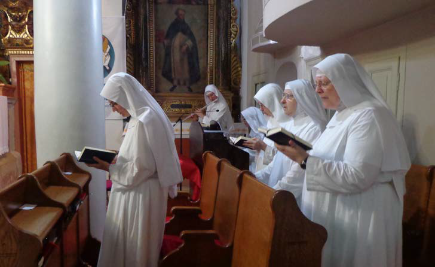
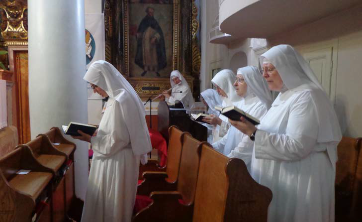

Benediktinski samostan sa crkvom svetog Andrije, utemeljen tijekom XI:, stoljeća izdiže se direktno iz litica uz obalu uvale sv. Eufemije. Samostan je bio osnovan za djevojke iz plemićkih rapskih obitelji. Neki povjesničari navode kako je to bilo 1123. godine, ali bez dokumentiranog oslonca. Prvi pak pisani spomen koji nam svjedoči drevnu povijest ovog samostana je natpis na zvoniku gdje je imenom spomenuta opatica Ivana. Jednostavni romanički zvonik podignut je 1181. i najstariji je od četiri rapska zvonika.
Samostanska crkva sv. Andrije je protoromanička trobrodna bazilika sagrađena u 11. st. a dao ju je izgraditi biskup Madius čije je ime uklesano na natpisu ulaznog praga u crkvu. U 14. st. bila je obnovljena a polovicom 15. st. temeljito preinačena. U 18 st. crkva je barokizirana – iz tog doba potječe i barokni drveni oltar, rad venecijanskih majstora sa oltarnom palom slikara Novellia. Drvene figure po strani prikazuju sv.Benedikta i apostola sv.Andriju.
Desno od glavnog oltara u lađi crkve nalazi se oltar Majke Božje koja se od 16. st. u samostanu i na cijelom otoku štuje kao Čudotvorna Gospa Rapska. Kretsko-bizantska ikona Bogorodice s Kristom u naručju iz prve je polovice XVI. stoljeća. Srebreni i pozlaćeni okvir ikone vrijedan je rad mletačkog zlatarstva iz XVIII. stoljeća. Na ulazu u samostansku kapelu nalazi se vrijedna kretsko-mletačka ikona oplakivanja Krista, tempera na drvu iz druge polovice XVI. stoljeća. U samostanskoj biblioteci, osim moderne duhovne literature, čuvaju se i vrijedni stari spisi, dokumenti i pergamene.

 


Koludrice sv. Andrije vjerne su svom poslanju molitve i rada. Molitva njegovana i brižno pripremana čini okosnicu njihova svakodnevnog života, omogućavajući i drugima da budu dionicima njihova molitve i sabranosti. U ozračju samostanskog mira, njeguju monaško gostoprimstvo.
Kao i prije gotovo tisuću godina tako i danas koludrice rapskog samostana kao čuvarice bedema grada, svojom molitvom i radom zagovaraju za potrebe Raba i svijeta moleći da Gospodin po zagovoru svetog Benedikta na svih izlije svoj blagoslov.